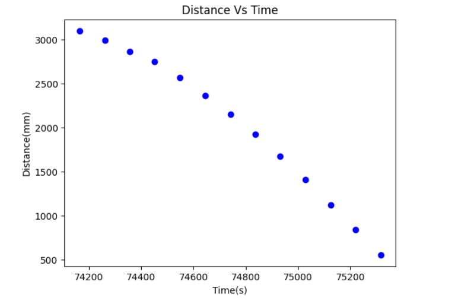
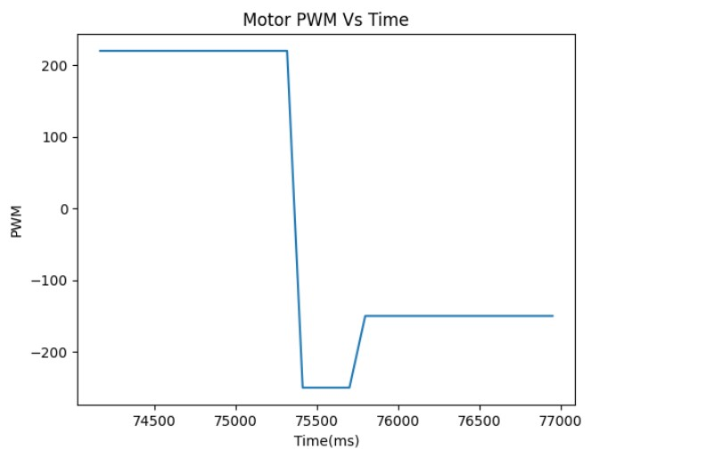

In this lab, we want to make a robot perform a specific stunt. The stunt I have chosen is to control the robot's position, so it can flip onto a mat that is located 0.5 meters away from a wall. After completing the flip, the robot must quickly drive back to its starting point.
During this lab, I removed the PID control in order to achieve a faster stunt. The main steps involved in making the car flip are as follows: first, the car needs to move forward at a high speed; second, the car needs to move backward when it is 0.5 meters away from the wall. Due to the car's inertia, it will then perform a flip. Below is the code that I used to accomplish this stunt:
I added lines 19-20 to briefly stop the left side wheels, as I noticed that they were responding faster than the right wheels during the flip. This temporary pause allowed me to successfully flip the robot. The three video below shows 3 successful stunts:
The stunt took 2.7 second ." These graphs below show the PWM and TOF readings during the experiment. It's worth noting that the TOF data is only valid up to a distance of 500 mm, as the robot began to flip after that point, and the readings were no longer available."
 